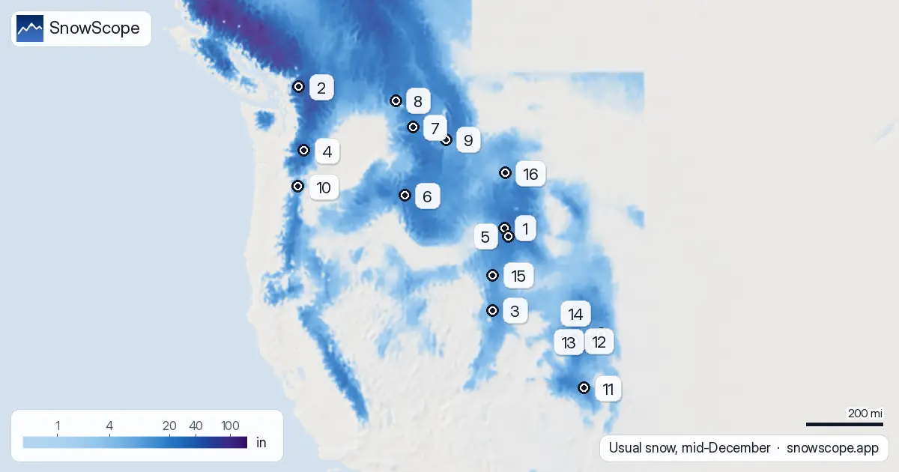

Les stations de ski américaines les moins chères et les plus sûres côté neige pour décembre 2026 : 16 comparées
La neige en début décembre est un pari risqué dans presque toutes les stations américaines, mais les probabilités s'améliorent nettement au fil du mois. Nous avons classé 16 stations de ski économiques d'après leur véritable historique de décembre—la part des 46 derniers hivers avec au moins 50 cm à mi-montagne le 15 décembre—et avons comparé chacune au prix actuel du forfait adulte à la journée.
Consultez les prévisions neige en temps réel pour US West sur l'application SnowScopeHauteurs de neige, alertes poudreuse et carte 3D, gratuitement.
Quelles stations ont les meilleures probabilités en décembre
Grand Targhee (Wyoming) est clairement en tête : elle a enregistré 50 cm ou plus à mi-montagne le 15 décembre lors de chacun des 46 derniers hivers. Mt. Baker (Washington) suit à 93 %, puis Brighton (Utah) à 89 %. Six stations se partagent 87 % : White Pass et Snow King (deux États montagneux), Brundage et Lookout Pass (Idaho), plus Montana Snowbowl et Schweitzer (également Idaho).
La deuxième moitié comprend Timberline (Oregon) à 78 %, Wolf Creek (Colorado) à 72 %, Ski Cooper (Colorado) à 70 %, Loveland (Colorado) à 67 %, Beaver Mountain (Utah) à 57 %, et Bridger Bowl (Montana) à 50 %.

Cinq stations qui équilibrent prix et fiabilité
Si vous voulez des probabilités au-dessus de 80 % et un prix de forfait sous 80 $ par jour, cinq stations répondent à ces critères. Brundage affiche 87 % de probabilité et commence à 65 $ certains jours (les prix augmentent à l'approche de votre date de visite). White Pass aussi à 87 % et débute à 69 $ en ligne du lundi au jeudi en dehors des vacances. Lookout Pass atteint 85 % de probabilité et coûte 63 $ si vous réservez une journée entre semaine à l'avance.
Les 89 % de probabilité de Brighton s'accompagnent d'un prix de départ de 72 $ si vous achetez tôt. Montana Snowbowl égale Brundage avec 87 % en historique et facture 78 $ les jours de semaine. La clé pour ces cinq stations : choisissez du lundi au jeudi et réservez dès que les dates s'ouvrent.
Les paris les plus fiables coûtent plus cher
Le track record de décembre 100 % de Grand Targhee n'est pas bon marché. Les forfaits en ligne là-bas varient de 125 $ à 180 $ selon la date. Mt. Baker, avec 93 % de probabilité, vend des forfaits à la journée uniquement au guichet : 98,80 $ les jours creuses (lundi-jeudi en dehors des vacances) et 115,42 $ les jours chargés, sans compter les taxes.
Snow King (Wyoming) commence à 100 $ et offre 87 % de probabilité. Timberline offre de la flexibilité : sa journée complète hors-pointe est 129 $ ou un forfait après-midi (à partir de midi) est 96 $. Le pack de 3 jours de Schweitzer pour 249 $ représente 83 $ par jour.
Les réductions importantes s'accompagnent d'une certitude moindre en début de mois
Les prix de forfait les plus bas appartiennent aux stations où la neige de mi-décembre n'est pas garantie. Ski Cooper facture seulement 49 $ les jours de semaine (87 % de probabilité sur un split semaine-weekend, mais seulement 70 % le 15 décembre lui-même). Loveland vend des forfaits 60 $ en ligne jusqu'au 13 décembre, puis passe à 159 $. Sunlight débute à 74 $, Beaver Mountain est un forfait fixe de 75 $, Bridger Bowl 86 $ en ligne, et Wolf Creek 96 $ les jours normaux.
Ces stations deviennent des paris beaucoup plus sûrs à mesure que décembre progresse. La probabilité de bonne neige augmente semaine après semaine : d'ici le 21-27 décembre, Ski Cooper atteint 96 % de probabilité, Bridger Bowl 78 %, et Beaver Mountain 76 %. Si vos dates peuvent se décaler, attendre la troisième semaine déverrouille à la fois des prix bon marché et de bien meilleures probabilités de neige.
Ce que les chiffres signifient
Ces pourcentages suivent 46 hivers de 1980–81 à 2025–26. Ils répondent à une question : à quelle fréquence chaque station a-t-elle enregistré 50 cm ou plus à mi-montagne d'ici le 15 décembre ? Une profondeur typique de mi-montagne à cette date varie de 51 cm à Bridger Bowl à 118 cm à Grand Targhee et 132 cm à Timberline.
Les prix ont été vérifiés sur la page officielle de chaque station le 13 novembre 2026. La tarification dynamique signifie que les prix « à partir de » augmenteront à mesure que les dates se remplissent. La neige précoce est fine et peut cacher les rochers ; consultez la carte des conditions quelques jours avant votre départ.
Comment trouver la meilleure affaire pour vos dates
Si vous pouvez skier la deuxième ou troisième semaine de décembre, choisissez un lundi au jeudi et réservez en ligne dès que les dates s'ouvrent. Vous évitez le supplément de fin de semaine et la période de pointe des vacances, et l'historique montre de bonnes probabilités dans la plupart de ces stations. Par exemple, Ski Cooper à 70 % de probabilité le 15 décembre passe à 93 % pour la semaine du 14-20 décembre et 96 % pour le 21-27 décembre.
Si début décembre est votre seule fenêtre, restez dans la première moitié du classement. Grand Targhee, Mt. Baker, et Brighton maintiennent tous au-dessus de 85 % de probabilité à partir du 1er décembre. Apportez de la patience, vérifiez les conditions avant de partir, et n'oubliez pas : le calendrier est votre forfait le moins cher.
Conseils aux skieurs
- Réservez un séjour en semaine la deuxième ou troisième semaine de décembre : les probabilités de neige sont élevées, les prix de fin de semaine sont évités, et vous échappez à la prime de pointe des vacances.
- Utilisez la tarification dynamique à votre avantage : quand une station affiche un prix « à partir de », réservez dès que le calendrier s'ouvre ; les prix ne font que monter.
- Si vous devez skier début décembre, choisissez des stations dans la première moitié du classement (au-dessus de 85 % de probabilité) : Grand Targhee, Mt. Baker, Brighton, White Pass, Snow King, Brundage, Lookout Pass, et Schweitzer.
- Fin décembre est plus sûr pour les stations économiques de la deuxième moitié. D'ici la semaine de Noël, Ski Cooper, Bridger Bowl, et Beaver Mountain atteignent tous 76–96 % de probabilité ; consultez la carte des conditions quelques jours avant votre départ.
- Consultez le bulletin d'avalanches officiel avant de skier hors-piste.
À propos de ces chiffres
Les hauteurs de neige des stations sont la neige la plus épaisse sur le haut du domaine à la date indiquée ; ce sont des estimations pour une zone, pas une mesure en un point. Les prévisions peuvent changer. Consultez toujours le bulletin d'avalanche officiel avant le hors-piste.
Citer ce bulletin
Pour la recherche, l'enseignement ou la presse : chiffres et graphiques réutilisables librement sous CC BY 4.0 avec cette citation.
SnowScope (2026), Les stations de ski américaines les moins chères et les plus sûres côté neige pour décembre 2026 : 16 comparées, https://snowscope.app/blog/fr/2026/11/cheapest-snow-sure-us-ski-areas-december-2026.html, consulté le 2026-11-14
SnowScope (Atlas Labs). (2026, November 14). Les stations de ski américaines les moins chères et les plus sûres côté neige pour décembre 2026 : 16 comparées. SnowScope snow reports. https://snowscope.app/blog/fr/2026/11/cheapest-snow-sure-us-ski-areas-december-2026.html
BibTeX
@misc{snowscope2026cheapestsnowsureusskiare,
author = {{SnowScope (Atlas Labs)}},
title = {Les stations de ski américaines les moins chères et les plus sûres côté neige pour décembre 2026 : 16 comparées},
year = {2026},
month = nov,
howpublished = {\url{https://snowscope.app/blog/fr/2026/11/cheapest-snow-sure-us-ski-areas-december-2026.html}},
note = {Published 2026-11-14 14:47 UTC; accessed 2026-11-14}
}· CC BY 4.0 · Méthodes, données et outils →
Suivre US West
Gratuit : un message quand la neige arrive, et la météo chaque matin.
Autres bulletins neige

Brighton à mi-montagne enregistre typiquement 94 cm le 15 décembre. Données du 13 novembre 2026.

Bridger Bowl facture 86 $ en ligne pour 2026/27. À mi-montagne, 50 cm le 15 décembre dans la moitié des hivers ; la semaine de Noël améliore les probabilités à 78 %.